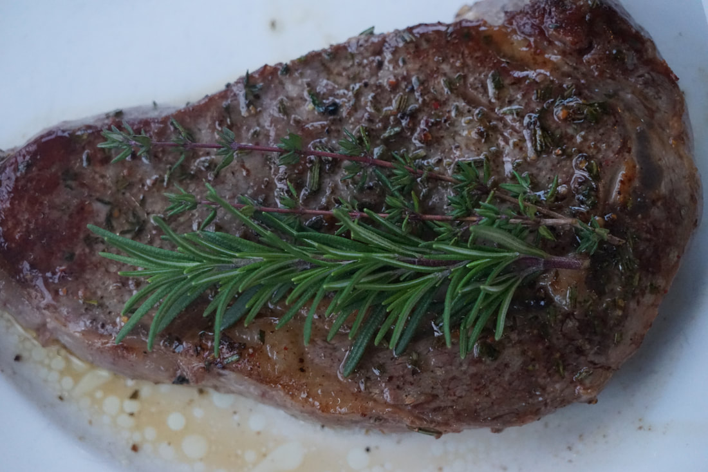

NY Strip

Description
This amazing NY strip is going to show the value in one of the cheaper cuts of steaks, and explode with flavor!
Ingridients
- New York strip Steak
- salt
- thyme
- 4 tbs unsalted Butter
- 1 garlic clove
Steps
- pour a high smoke point oil into a pan with heat on high
- dry off steak and salt
- when oil starts to smoke place steak on thin side in the pan
- sear everyside for 1 1/2 minutes moving steak in the pan for a even sear
- when all sides are seared reduce heat to medium low and throw in the butter and thyme
- baste the steaks with the butter and thyme for around 6 minutes or until desired internal temperature is 10 degrees less
- lastly let the steak sit and cook on your plate for 10 minutes then serve and enjoy